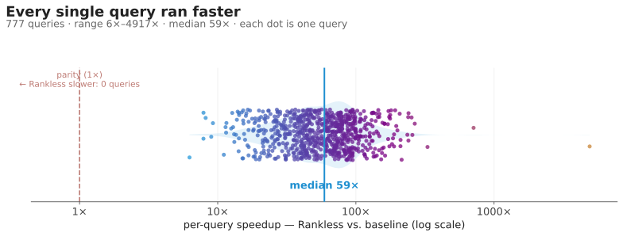
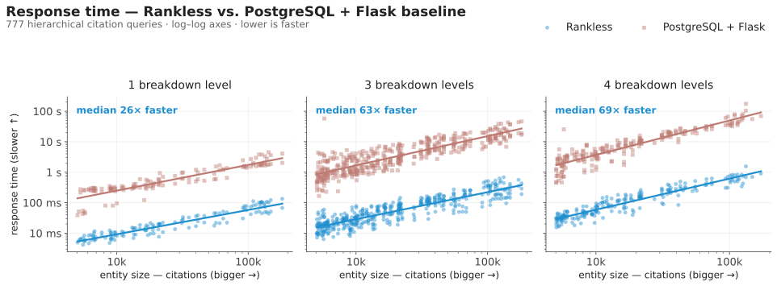
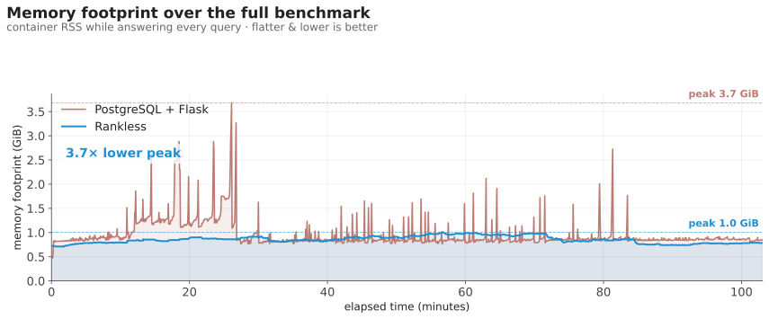
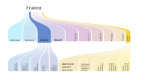
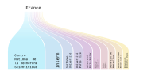
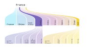

Data-specific compilation for real-time citation-network exploration
A shared starting point for designing the conference poster — the core message, the three
things worth showing off, the real figures, and a pile of visual ideas to react to.
Nothing here is final. It's a board to point at.
Venue · ICWE 2026 (demo track)Author · Endre M. BorzaAffiliation · Center for Collective Learning, Corvinus UniversityLive · rankless.org
How to read this document
This is a mood board, not a layout. It collects everything we might
want on the poster so we can decide together what stays. It's deliberately over-stuffed
— we trim later.
Two things matter most: the message (what a passer-by should take away
in 5 seconds) and the three content pillars that back it up. The brand
look is a given — it's your call how far to push it. Everything labelled
DESIGNER NOTE is a practical pointer;
everything in the idea lists is a "could be", not a "must".
The title
Headline candidates
The title is the poster's hardest-working line — it has to name the
technique and the payoff in one breath and still read from 3 m away. Below
is a ladder from punchy to descriptive. Pick a main line, optionally pair it with one of the
deks.
paper-aligned · descriptive
Rankless: Data-Specific Compilation for Live Browsing of a 1.7-Billion-Edge Citation
Network
Closest to the paper title — safest and fully self-explanatory.
benefit-first
Browse a 1.7-billion-edge citation network — live, on one machine
Leads with the payoff; "Rankless" rides above it as a smaller kicker.
technique hook
Compile the data, not just the code
Dek:
real-time exploration of 1.7 billion citations from a single compiled binary.
provocative · contrast
When the database becomes the program
Dek:
instant breakdowns over a billion-edge graph — no cluster, no query planner.
numbers-forward
A billion citations, redrawn instantly
Dek:
Rankless compiles a database cluster's work into one binary — ~70× faster, 3.7×
leaner.
sustainability angle · ICWE theme
A database cluster's work, on a single box
Dek: data-specific compilation for performant, low-energy web systems.
Designer note · title mechanics
Whichever line wins, keep both "Rankless" and
"data-specific compilation" on the poster — one is the name to remember,
the other the term to search later. A big main line plus a smaller one-line dek reads far
better at A0 than one long sentence. The current working title (top of this board) is the
descriptive option; the bolder lines are there to tempt you.
The north star
One idea the poster must land
A new, genuinely different way of building a data web service —
compiling the data itself into the program — turns a problem that used to
need a database cluster into something a single ordinary computer answers
instantly, on a billion-edge citation graph.
Novel
A technique, not just an app
The headline isn't "a website about citations." It's a reusable architectural pattern —
data-specific compilation — that happens to be demonstrated on scholarly data.
Measurable
Numbers, not adjectives
The benefit is quantified against a real, fairly-built database baseline:
~70× faster, 3.7× less memory. These numbers should be
impossible to miss.
Tangible
You can see what it buys
The payoff is visible: rich, multi-level breakdowns of
1.7 billion citations that redraw instantly in the browser. Show the
pretty thing it makes possible.
Designer note · tone
Confident and clean, not loud-startup. The audience is researchers and web engineers. The
poster should feel like a precise instrument — think
scientific, spectral, a little futuristic — earning its claims rather than shouting
them.
I The technique
One picture: data-specific compilation
The whole technique in a single graph. The raw dataset is fed through a chain of
interdependent build steps — each one reads the data and
writes the code the next step compiles against. They compile down to
one binary that, alone, loads the data and serves the entire backend as a
single multi-threaded process. The data's shape literally becomes the program.
Candidate 1 — the build chain, end to end
The explanatory version: raw data on the left, the self-generating step chain in the middle,
and the single binary + single serving process on the right. Every arrow is a real
dependency, not decoration.
The dataset feeds a chain of build steps; each reads the data and emits the next step's
source (the spectrum rail), so every step is compiled against the ones before it. The
chain compiles into a single binary and a set of packed data files — which one
multi-threaded process loads, memory-maps, and serves from. No database anywhere in the
path.
Candidate 2 — the same idea, stripped to the icon
For a distance read: four beats, big type, the self-generating loop made the hero motif. Use
this if the panel needs to land in three seconds rather than reward a lean-in.
Raw data → a short chain of steps that write their own successors → one binary tailored to
the data → one process that serves it all.
The one piece of annotation — pick a voice
The graph carries the picture; one short caption carries the term we want people to remember
and search later. Three drafts of the same idea — choose one to sit beside the chosen
diagram.
A · plain-language
Data-specific compilation
The build studies this exact dataset and writes a program — and a memory layout — shaped
to it. The data's structure becomes code.
B · the mechanism
The data writes the program
Seven build steps run in sequence; each inspects the data and generates the code the
next one compiles against. What comes out is a single binary with no generic database
underneath.
C · why it's fast
No planner, no generic tables
Because the access path is decided at build time and baked into the binary, answering a
request is a direct walk through purpose-built arrays — not a query to plan and execute.
Designer note · the money shot
If one image carries this panel, it's the chain that
builds itself into a single binary, then a
single process doing the whole job. The punchline is an absence: there's
nothing generic left to fall through. Let the spectrum rail (generated code) be the one
thing in full colour; everything else can recede.
II The results
Measurable, significant benefits — made loud
A controlled head-to-head against a properly-built PostgreSQL + Flask baseline, over
777 real hierarchical queries across 5 entity types, 0 errors. Four blocks:
the headline numbers, then three charts that each tell one thing the numbers can't.
Block 1 · the headline numbers
70×
faster, total query time 83 s vs 5 795 s · 777 queries, 0 errors
3.7×
less peak memory 1.0 GiB vs 3.7 GiB
48 ms
median query time vs 2 910 ms on the database — same 777 queries
More numbers from the same run — pick whichever fit the space:
59×
median per-query speedup range 6×–4917× · every query faster
≈2%
mean difference vs the database same answers, just faster
1
commodity server no cluster, no GPU
Designer note · the hero number70× is the single most quotable figure — set it in the spectrum gradient,
biggest thing after the title, with 777 queries, fair baseline tucked underneath so
it reads rigorous, not hand-wavy. The 48 ms vs 2.9 s tile is the one to set
as a literal face-off: our median directly opposite theirs. (Sustainability angle for ICWE:
3.7× less memory on one box ↔ a smaller machine ↔ less power — worth one line.)
Blocks 2–4 · three charts, each with its one job
Freshly redrawn in the brand palette (hero in brand blue, baseline a muted grey-red), plain
axes, the win called out on the chart. All are editable SVG in
docs/poster/assets/.

B · every single query is faster. One dot per query, placed by how many times
faster Rankless answered it. All 777 land right of parity — the slowest win is 6×, the
median 59×, the best 4917×. There is no losing case.
Poster callout
“777 / 777 queries faster — median 59×.”

C · the lead holds as questions get harder. Faceted by how deep the breakdown
goes; the gap between the two lines never closes. Harder queries don't erode the
advantage — the baseline degrades faster than Rankless does.
Poster callout
“Deeper breakdowns — the gap only widens.”

D · a steady hand vs. a shaky one. Rankless holds a flat ~1 GiB for the whole run;
the database climbs and spikes toward 3.7 GiB. Same workload, a third of the peak — and
none of the jagged spikes that force you to provision a bigger machine for the worst case.
Poster callout
“Steady 1 GiB — no spikes to provision around.”
Designer note · chart honesty
These are brand redraws of the run's real numbers — bigger fonts, fewer gridlines, plain
axes, brand colours. Keep them faithful: the variants differ only in framing, never in
numbers. The dropped charts (the log–log gap band, the peak-memory bars, the accuracy panel)
are folded into the numbers block above — bring one back as a chart only if a panel feels
empty.
III What it enables
The payoff: billion-citation breakdowns you can actually explore
All that engineering buys one thing: you can take 1.7 billion citations and
slice them, live, into a deep hierarchy that redraws instantly. The figure below is a real,
editable SVG straight from the site's breakdown.svg endpoint — not a
screenshot.

The hero breakdown. Who cites research from France, broken down by
citing country → institution, with two branches expanded. Every band is a
slice of the billion-edge graph, and the whole thing is one inline SVG the server renders
on demand. This is the centrepiece candidate.
One breakdown, or two? — both sides of every citation
Still up for debate: a single Sankey, or a pair that shows the two sides of a citation edge
— the work an entity produces, and the impact it receives. Both are the
same endpoint, different selection. Candidates:

Production side. France's own output, broken down by the institutions that
produced it — a clean single-level fan.

Impact side. The same France, but by who cites it — citing
country → research field. Pair it with the hero for a “gives / gets”
diptych.
What this enables
1.7B
citations
80M
papers
4M
authors
33k
institutions
Multi-level hierarchical breakdowns. Drill country → field → institution → topic,
any order, reconfigurable at every level — and it redraws instantly, live in the browser.
Both sides of every edge. Each entity has a production set (its own
papers) and an impact set (the papers citing those) — so you can break down what
it gives and what it gets, by any dimension.
Every entity is a starting point. Authors, institutions, journals, countries, and a
four-level discipline hierarchy (4 domains → 26 fields → 252 subfields → 4 516 topics) —
all queryable, all instant.
More than one view. The same data also drives a geographical impact map, a
research-space network, a co-authorship graph, and peer heatmaps — all hand-drawn SVG.
Designer note · invite interaction
The poster's last move is “go try it.” A prominent
QR code to rankless.org
turns the poster into a live demo in the visitor's hand — search yourself, your
university, watch the billion-edge breakdown redraw. Pair it with a one-line dare:
“Find your institution. Under 2 minutes.” Live captures still worth grabbing at
high res for the final board: the geo impact map, the research-space network, and a peers
heatmap.
QR → rankless.org (place final code)
link the live site
Layout sketches
A few ways the A0 could come together
Loose block sketches, not designs — just to argue about proportions and reading order. A0 is
big (84 × 119 cm portrait); a poster is read top-to-bottom from ~1.5 m away, so the title
and hero number must work at a glance and the detail rewards stepping closer.
Option 1. Message-first portrait
RANKLESS — data-specific compilation
ONE LINE: compile the data → instant billion-edge breakdowns
I · technique (compilation graph)
70× 3.7×
III · HERO TREE VISUAL (big)
timing
memory
scale 1.7B
author · affiliation · funding logos
QR
Option 2. Hero-image dominant
RANKLESS
FULL-BLEED TREE VISUAL as the backdrop
what it is (1 line + def)
how (mini diagram)
70× faster
3.7× leaner
1 server
author · venue · funding
QR
Option 3. Three explicit pillars
RANKLESS — real-time citation exploration
I TECHNIQUE
compilation graph + annotation
II RESULTS
70× · 3.7× + charts
III ENABLES
tree + gallery
author · affiliation · funding logos
QR
Designer note · reading order
Whatever the layout: title → one-line claim → hero number → hero visual
should be the first four things the eye hits. Everything else is "lean in closer" detail. A
landscape A0 also works if the venue prefers it — Option 3 adapts cleanly.
Practical brief
Specs & must-haves
Production checklist
Size: A0 — default portrait; confirm orientation with venue.
Charts: redraw the three plots in brand colours (don't just paste the PNGs) —
see redraw notes in Pillar II.
Hero visual: capture the tree figure at the highest resolution the site allows.
QR code: to https://rankless.org, tested live.
Required text & credits
Title: Rankless: Data-Specific Compilation for Real-Time Citation Network
Exploration.
Author: Endre M. Borza · ORCID 0000-0002-8804-4520.
Affiliation: Center for Collective Learning, CIAS, Corvinus University,
Budapest, Hungary.
Venue tag: ICWE 2026 (demo).
Funding line (verbatim): Supported by the Learn Data ERA Chair from the
European Research Executive Agency, funded by the European Union under Horizon Europe
Grant Agreement 101086712.
Logos to source: Corvinus University, Center for Collective Learning, EU /
Horizon Europe / ERC emblem.
Data credit: data from OpenAlex + SCImago.
Designer note · don'ts
No internal jargon beyond the one defined term (data-specific compilation). Don't
crowd it — A0 tempts you to fill every cm; white space at this size reads as confidence.
Don't let the database baseline look strawman-ish; the credibility comes from it being a
fair fight.